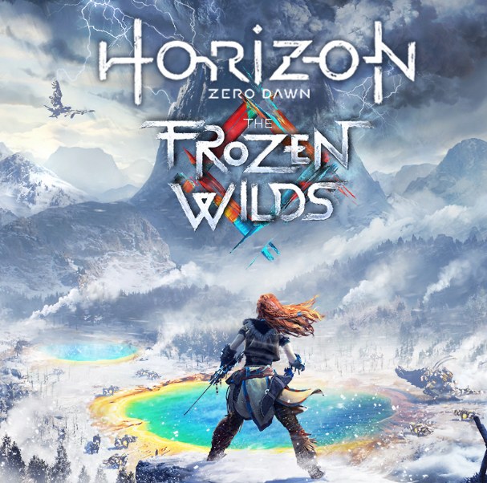

RESUMEN DEL JUEGO
Amplía el vivo y posapocalíptico mundo de Horizon Zero Dawn con este nuevo e increíble complemento.
En The Frozen Wilds, Aloy se adentra en las tierras fronterizas de la tribu nómada de los Banuk
para investigar la amenaza de una nueva y misteriosa máquina. Aloy deberá soportar las duras
condiciones del entorno y ganarse el respeto de los Banuk para conseguir los aliados, las
habilidades y los conocimientos que necesita para desvelar un secreto del pasado y detener una
amenaza para el futuro...